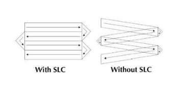

3 week03 - Remote Sensing Data
4 Summary
In this week we learn about history of Landsat data and pre-processing of imagery satellite data.
We have to thank Virginia Wood for the landsat data we have nowadays because previously NASA wanted to use analogue system (RBV camera - TV camera with Green, Red and NIR spectrum) for their sensor. This is the spectral that catch by the Landsat RBV, and then cutted into only 4 bands, green, red, red-near IR, and near-IR. Then, Virginia Norwood suggested to use Multispectal Camera (MSS) which allows us to have 7 bands image. This became standar for the following landsat. Since then she is known as “the Mother of Landsat”
Preprocessing step is a step we do to make our imagery data ready to be processed (classified) or analysed. It can be seen on the mind map that preprocessing steps we can do 3 thing, which are: 1. Correction 2. Data Joining 3. Enhancement Not every imagery data required all these 3 steps, it depends on the data we get and what we are going to do. Check this mind map to understand the outline of pre-processing steps.
4.1 Correction
- Pre-processings are required (occasionally) because imagery data can contain flaws or errors from the sensor, atmosphere, terrain and more
- Scan Line Correction (SLC) is pair of mirror to compansate the forward movement of satellite so the resulting scan are shown paralel

GEE Interface Failed scan line landsat is on Landsat 7, because it moves in a zig zag, and the corrector made the image normal
Imagery was still distributed but it is hard to use with methods developed to estimates the gaps, termed gap filling. ### 1. Geometric Correction
- Means geometry on how the image located on earth.
- Satelite image has CRS (Coordinate Reference System)
- Image distortions can be introduce due to:
- View angle (off-nadir)* - Nadir means directly down

View Angle if the satelite off nadir, it will cause shadowing and we have to correct it
- Topography (e.g. hills not flat ground)
- Wind (if from a plane)
- Rotation of the earth (from satellite)
- because of the earth rotation, the image produced will be off grid, so it has to be aligned
- [[Pasted image 20230222070839.png]] #### Geometric Correction Solution
- View angle (off-nadir)* - Nadir means directly down
- [[Pasted image 20230220161558.png]]
- Steps:
- identify Ground Control Points (GCP) to match known points in the image and a reference dataset
- Reference Dataset can be:
- Local Map
- Another image
- GPS data from handheld device
- GCP typically using object that does not move, such as:
- Parking lot
- Building
- (typically non-vegetation)
- Reference Dataset can be:
- Take the coordinates and the model them to give geometric transformation coefficients
- Transform the GCP coordinates to the right one using linear regressrion
- plot these and try to minimise the RMSE
- identify Ground Control Points (GCP) to match known points in the image and a reference dataset
- Modelling
- Forward mapping
- predicting corrected image with uncorrected image
- [[Pasted image 20230228102446.png]]
- x and y are positions in the corrected map
- But the issue is that we are modelling the rectified x and y which could fall anywhere on the gold standard map (e.g. not on a grid square or at a floating point)
- forward mapping isn’t the most common one to use
- [[Pasted image 20230220165826.png]]
- Backward Mapping
- Predicting the uncorrected image with the corrected image
- [[Pasted image 20230228102853.png]]
- Every value in the output (corrected image) pixel will have value in the original input (uncorrected) image.
- the images are distorted so might not completely overlap. The goal is to match distorted image with gold standard image, so we want the pixel to line up
- [[Pasted image 20230220165951.png]]
- Forward mapping
- Resampling
- resampling is transforming from grid to another grid
- we need to do re-sampling because the image data we get might slightly shifted. ANd is can be useful if the image has different grid size (or different band that has different resolution, like in the 1st week practical)
- [[Pasted image 20230228104428.png]]
4.1.1 2. Atmospheric Correction
- Atmospheric correction is the influence of atmospher on our data:
- Atmospheric scattering
- topography Attenuation (reduction)
- The goal is to remove the influence of atmosphere
- Situation where necessary or unnecessary to do atmospheric correction:
- Unnecessary
- if just look into one single images, because we dont have to see data across time
- Necessary
- typically if we have time constrain. To compare data in multiple time stamp
- Unnecessary
- Scattering create haze that reduce the contrast pf the image
- bright reflective material, eg, concrete, asphalt. karena terlalu terang jadi bocor ke sekitarnya
4.1.1.1 Atmospheric Correction Solution
- Relative
- Adjust some data relative to something else as reference
- Type
- Dark object subtraction (DOS)
- Done by searching dark value (usually water) of each band and substract that value from each pixel
- Psuedo-invariant Features (PIFs)
- this used when we have may images. We pick 1 image as based image. Determine feature that don’t change. Make regression model with Y is the based image. Adjust the ijmage based on regression model
- [[Pasted image 20230228111657.png]]
- Dark object subtraction (DOS)
- Absolute
- Change digital brightness values into scaled surface reflectance. We can then compare these scaled surface reflectance values across the planet
- Basically made atmospheric model called atmospheric radiative transfer models
4.1.2 3. Topography Correction/ Orthorectification Correction
- it means when we are not looking straight down (nadir), so the image distorted.
- orthorectification means removing distortion by making the pixel viewed at nadir
- for orthorectification we need sun zenith and azimut angle, and orientation of the slope from DEM.
- [[Pasted image 20230228113746.png]]
- Zenith meas directly up while nadir means directly down
- Azimut is position of sun to north, south, east, west
- Atmospheric typically happen before topographic correction
4.1.3 4. Radiometric Calibration
- Sensor capture image as Digital Number with no units. Spectral Radiance is the amount of light within a band from a sensor in the field of view
- Radiometric Calibration: Calibrate the data (digital Number) into radiance and convert to specific unit
- Radiance refers to any radiation leaving the Earth (i.e. upwelling, toward the sensor
- basically, before sending sensor to the space, calibaration was done to check whether sensors performing correctly or not. We then use the calibration measurements to adjust the data captured by the sensor
- [[Pasted image 20230228115429.png]]
4.2 Joining Datasets/Enhancement
- the ideas is joining or merging or mosaicking or feathering images into one seamless image
- This process was done by taking few pixel from each image at the same location and overlaping those pixels. Then, blending these to image on the ovelaped pixels
- Those image are ovelapping by 20-30%
- [[Pasted image 20230228153010.png]] source Seamless Mosaic (l3harrisgeospatial.com)
- [[Pasted image 20230228153057.png]] source gdal - How to create a mosaic in QGIS with cutline and feathering for Landsat-8 imagery - Geographic Information Systems Stack Exchange
- However the challenge is the image we get might coming from different day and lighting condition or even different satellite. It can cause different band value thus those image have to undergo standarisation and normalisation
- Standarisation by dividing the SR value by a maximum value per band
- normalisation by divide the standarised value by the sum of values across all bands ## Image Enhancement
- it doesn’t alter the value of the data, merely changing how it explains and visual appearance ### Contrast Enhancement
- [[Pasted image 20230228153934.png]]
- done by:
- stretching min max value
- percentage Linear and Standar Deviation
- Piecewise Linear Contrast Stretch
- it doesn’t alter the value of the data, merely changing how it explains and visual appearance
4.2.1 Ratio enhancement
- band ratioing means dividing bands by each other
- eg: Normalize Burn Ratio
- [[Pasted image 20230228154641.png]]
- source: Landsat Normalized Burn Ratio | U.S. Geological Survey (usgs.gov)
4.2.2 Filtering
- means taking an image an having a moving window to see aggregation of the image. Calculate surround pixel and put the average value as the middle pixel’ value
- Low Pass or low frequency is average of the surrounding pixels
- High pass or high frequency is enhance local vatiations
- [[Pasted image 20230228154958.png]] ### Principal Component Analysis
- Using PCA we can make our data smaller and maximise variation between our data
- PCA will transforming multi-spectral data into uncorrelated and smaller data set
- Reduce dimensionality
- Example:
- multi-temporal PCA bands from both time points are combined into one image, then PCA
- [[Pasted image 20230228191626.png]]
- so initially there are 2 or 3 images from different time stamps. It was stacked together and did PCA. From the PCA,they classify land use changes. Then maximise the variation.
4.2.3 Texture Enhancement
- Textture is spatial variation of gray value
- usually used for medical detection
- Texture analysis looks at the tonal feature of the image by looking at the surrounding values. So there’s a moving window with 3x3 grid and it will calculate the value of a pixel with variance and probability of surrounding (within the window) value
- Texture variance result
- [[Pasted image 20230228193044.png]]
- sisi yang terang adalah pinggir2 gedung karena tepi texture has high variance value
- Texture is beneficial to give additional information to our model as it oppose to just relying on spectral reflectance. Thus we can improve our classification model.
4.2.4 Data Fusion enhancement
- stack of multiband data fused with PCA or texture or other enhancement.
- Image fusion can alse be from different sensor. eg. Sentinel fused with Landsat
- usually it take the median value of each pixel of each band.
5 Application
Learning about image enhancement in pre-processing step are really beneficial especially when we are dealing with huge datasets, such as hyperspectral and multi-temporal imagery (Rodarmel and Shan, 2002). Principal Component Analysis enhancement is a tools to reducing dimensionality if we are detecting land-use change from time to time using stacked multi-date data like what Deng (2008) in their paper. In detecting land-use change in Hangzhou City, China, they also use data from various sensors which are aerial photograph, SPOT-5 and Landsat-7. [[Pasted image 20230315165944.png]] The image above shows one example of land use change from cropland to urban land. These image shows:
a ETM in 2000
b aerial photograph in 2000
c SPOT-5 in 2003
d Ikonos in 2003
e-h are the principal component.
source: Deng (2008) Using PCA wil make it easier to see detect the change because it will produce a new image (Principal component) that intensify the change (Ingebritsen and Lyon, 1985). In Deng’s paper, PCA was used to combining image band that taken from two different times into one new image. Changed area will have high correlation between two image, meanwhile unchanged are will have low correlation. Afterwards Deng classified and labelled the correlation value to detect changing area.
In this analysis the usage of PCA on multitemporal and multisensor data shows high accuracy value which is 89.54%. Other application of PCA in hyperspectral done by Rodarmel (2002), also shows satisfying result with 70% correct classification rate. Rodarmel and Shan, use hyperspectral data to detect component of land cover, such as, vegetation, mineral and soil type. They stacked band 1-5, 1-10 and 1-25 from HYDICE image and use PCA to generate 4 different PC images. Afterwards they classified the result of each PCA image and compared with original image PCA. The result shows PCA from band 1-5 is contain most information, while bands beyond 10 only contain noise. [[Pasted image 20230315180749.png]] source: Principal Component Analysis for Hyperspectral Image Classification
Although, PCA helps reducing image dimensionality, the output does not give much information. It has to be processed using image classification, as shown in the 2 paper I discussed above (Licciardi et al., 2012). We can say that output of PCA is input for other analysis. Thus, to do a robust analysis, we also need to learn about methods other than image enhancement.
6 Reflection
This week content about image correction, data joining and enhancement are really interesting because it is beneficial in practical and academical context. Imagery data that we get from sensor is not always perfect, it might have some error that come from the atmospher or the sensor itself. Especially in some region with high degree of moist, acquiring clear image is a challenge due to the existance of cloud (Deng et al., 2008). This can be tackled by atmospheric correction or if we use multitemporal data we can do PCA. Not only from external factors, but image error can also happend because the radiometric calibration of the sensor. Thus, to conduct an accurate and robust analysis we have to reduce the error by doing corrections.
Image enhancement helps to handle huge data set from multi-temporal, multispectral, and multi-sensor images. This is beneficial to see the change of land use. For developing countries, where development happen organically, a lot of residential built without permission so the government does not have the data about land usage in the city. By using remote sensing to detect the land-use changing will help government to be aware of the informal residential and observe where informal development tend to happen over time.
However, we cannot just stop at learning about image enhancement because it only give us input for further analysis. We should also learn about image classification to detect land use and land coverage. For classification methods you can go to chapter 6 and 7.